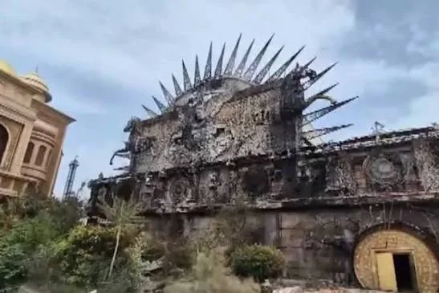

I'll be honest: I went in expecting an empty building. I didn't expect it to feel occupied.
Kingdom of Dreams used to be one of the loudest places around, a hub of music, theatre, and over the top performances. People came here for the lights, the sound, and the spectacle. Standing outside now, I barely heard any of it.
The first thing that hit me was the quiet. It wasn't the peaceful kind. It was the kind that presses against your ears, so that you start listening for something, anything, just to prove the place isn't holding its breath.
My footsteps sounded too loud. I slowed down, and the echo seemed to take a moment longer to fade than it should have.
I made my way toward where the performances once happened. I tried to picture it: the music, the crowd, the glow of the lights. But the empty stages didn't feel abandoned. They felt like they were waiting, like a performer who had stepped offstage and never come back.
The corridors were worse. The light thinned out, and the darkness at the far end seemed to sit there deliberately. I kept telling myself it was just an empty building. Then something shifted in the dark, probably the wind, and I stopped telling myself anything.
I can't explain this part well. I wasn't scared of anything I could see. It was a feeling, the kind you get when you're sure someone is standing just behind you, close enough that you'd feel their breath if you turned around.
I didn't turn around. I stood still and listened. In that silence, I swear it felt like the whole place was listening back.
I left faster than I came in. Only when I was back outside, with the daylight hitting my face, did I let myself breathe properly.
Maybe it was my imagination. Maybe an empty place this big, once so full of noise, just plays tricks on the mind. But I keep coming back to one question, and I can't shake it:
If the show is over, who's still in the audience?
But the next time you're somewhere silent and empty, and the hair rises on the back of your neck, don't turn around too quickly.
Because what if you're not alone?
Are you excited for halloween, cause the noises might be beside you.
Want more? Read more of our blogs here.